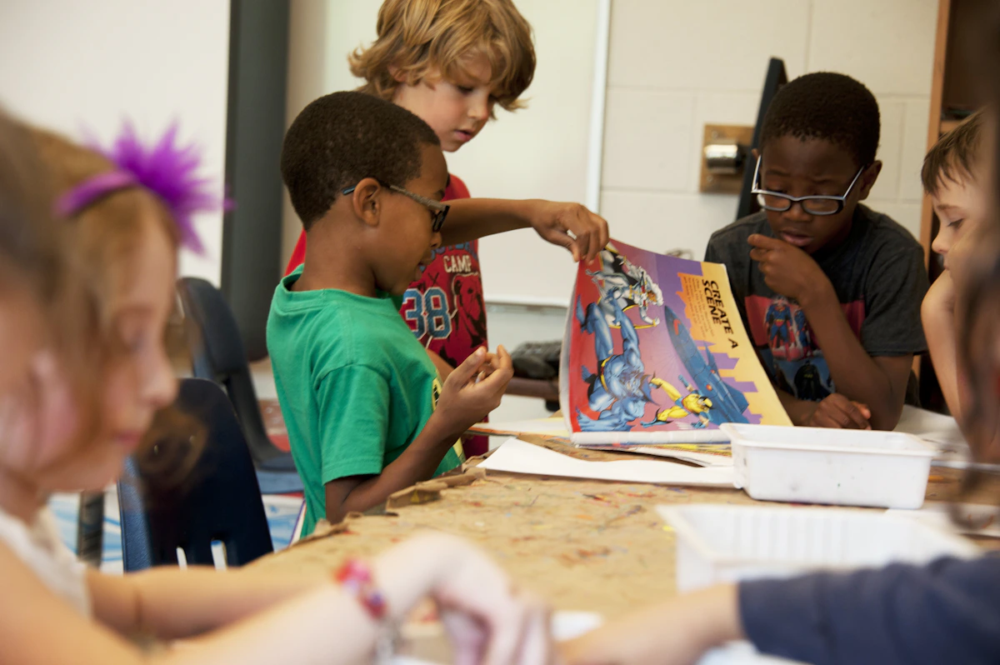

PP1 & PP2
PP1 & PP2
Small steps. Big discoveries.
Play, stories and hands-on discovery help young children find their voice and feel at home in school.
Explore early years
A school where your child is known, curiosity is encouraged and every new day brings room to grow.
Choosing a school means choosing the people, experiences and values that will shape your child's day.
At Bright Future, thoughtful teaching goes hand in hand with kindness, creativity and a sense of community. We make time for questions, encourage children to try, and celebrate progress in all its forms.
Get to know our school
A connected learning pathway, with care and challenge at every stage.
PP1 & PP2
Play, stories and hands-on discovery help young children find their voice and feel at home in school.
Explore early years Grades 1–6
Grades 1–6
Reading, mathematics, creative arts and practical enquiry make room for every child's growing interests.
Explore primary school Grades 7–9
Grades 7–9
Deeper study, collaborative projects and thoughtful guidance build independence with a steady foundation.
Explore junior school

Books, sport, art and shared projects help learners discover what they enjoy—and the confidence to keep going.
Beyond the classroomSchool works best when families and teachers work together. Follow learning progress, keep up with notices and find school services in one familiar place.
Open the school portalUseful feedback and space to discuss the next step.
A class teacher to turn to when questions arise.
Timely updates about the things families need to know.
Reports, balances and resources for linked children.
A classroom exhibition shows how drawing helps children tell stories and explain what they notice.
Read the storyBook-sharing circles bring families and learners together around the joy of a good story.
Read the story
Our sports programme makes practice, teamwork and fair play part of the learning journey.
Read the storyExplore the classrooms, talk through the school day and discover which learning stage feels right for your family.